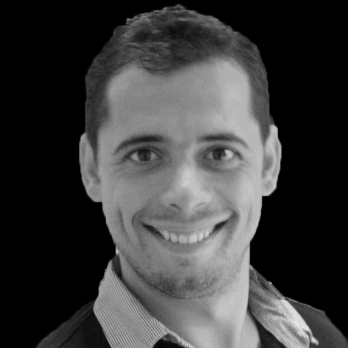

Sebastien Le Querec
Ingénieur Système, Réseau et Sécurité
Mes connaissances techniques, ma curiosité et ma rigueur professionnelle sont les points forts que je désire apporter à votre entreprise. En effet, mes différents postes en laboratoire, ainsi que mon projet associatif, ont été des expériences enrichissantes. Ils m’ont permis de développer J’ai à cette occasion acquis des qualités essentielles à la bonne conduite de projets :
- Organisation rigoureuse pour une gestion optimale de la cinétique des projets en cours.
- Flexibilité et adaptation rapide en fonction des résultats obtenus.
- Veille technologique dans un environnement concurrentiel.
- Communication : Rédaction de bilans à usage interne et externe, demande de financement, présentation orale (Français ou Anglais).
| Colone A | Colone B |
|---|---|
| Colone 1A | Colone 1B |
| Colone 2A | Colone 2B |
Mon Asso
Conetic est une association loi 1901 qui a pour but la promotion, l’utilisation et le développement des réseaux Internet dans le respect de leur éthique en favorisant en particulier les utilisations à des fins de recherche ou d’éducation sans volonté commerciale et enfin de défendre la neutralité du réseau.
Vaste programme !
Afin de répondre à ces objectifs, les membres ont décidé de devenir Fournisseur d’accès à Internet pour leurs adhérents.
D’autres projets sont en cours d’élaboration/de questionnement, et auront pour but de sensibiliser le plus grand nombre aux divers dangers d’Internet, et de l’optimisation de son utilisation.
Suivez ce lien pour plus d'information : www.conetic.fr
Mon CV
Sébastien Le Querec
13 rue Henri Ravera
92220 Bagneux
Administrateur Réseau
Système et Sécurité junior
Président Conetic
Novembre 2013 à Aujourd'hui - Chartres
L’association Conetic à pour but la promotion, l’utilisation et le développement des réseaux Internet dans le respect de leur éthique en favorisant en particulier les utilisations à des fins de recherche ou d’éducation sans volonté commerciale et enfin de défendre la neutralité de ce réseau.
Moyens d'actions :
-Fournisseur d’accès à internet (prévu fin mars 2014) pour ses adhérents.
-Mise à disposition de services messagerie instantané, mail, transfert de fichiers, hébergement de contenu et toutes application fonctionnant sur Internet, pour ses adhérents.
-Publications des actions de formation et d'éducation populaire en rapport avec l'objet de l'association.
ETNA/EPITECH (Ecole Des Technologies Numeriques Appliquees)
Octobre 2013 à Aujourd'hui - Ivry Sur Seine
Préparation du Master 1
Programmation/ Administration de WebServices/ Web avancée
Méthode de conduite de projets
Programmation Système Unix en C
Programmation Réseau
Programmation Système Windows
Programmation en RUBY
Réseau avancé
Sécurité réseau
Administration SGBD
Concept de VoIP
Administration de messagerie
Assistant de recherche
Décembre 2009 à Décembre 2011 - INRS IAF montreal
« Implication de l’épididyme dans la maturation des spermatozoïdes »
Réalisation d'un projet scientifique dans son ensemble.
-Culture cellulaire; co-culture.
-Q-PCR.
-Western Blot.
-Séparation cellulaire par gradient de Percoll.
Assistant de laboratoire
Janvier 2009 à Juin 2009 - giga neurosciences Liège
« Rôle des œstrogènes dans le développement du comportement reproducteur femelle chez les souris. »
- Mise en place d’un protocole d’expérimentation et gestion du calendrier des expériences (comportement sexuel).
-Ovariectomie sur souris adulte et de 9 jours.
-Immunohistochimie en coupe flottante et sur lame mince (cerveaux).
Université Tours Francois Rabelais
Septembre 2008 à Juin 2009 - Tours
Master 2 biologie évolutive, intégrative et infectiologie
spécialité biologie de la reproduction
Présenation de l'ETNA :
L’ETNA s’adresse aux passionnés d'informatique qui ont déjà validé un Bac+2 ou Bac+3 et qui souhaitent rapidement devenir Architecte logiciel, développeur d’application ou Architecte système réseaux et sécurité. En savoir plus sur les conditions d'admission.
Quel est le rythme de l’alternance ?
L’alternance ETNA est dite « nouvelle » parce qu’elle permet à l’étudiant d’adapter son emploi du temps aux contraintes de son poste en entreprise. Pour autant, le travail est rythmé et organisé, le contrôle continu est l’outil d’évaluation, il pose des échéances régulières tout au long de l’année (un vendredi sur trois).
Ainsi, l’étudiant aura en moyenne 40 heures de travail toutes les 3 semaines. Le calendrier pédagogique est calqué sur celui des entreprises en octroyant 5 semaines de congés.
Ca commence quand ?
Pour l’année universitaire 2014/2015, c’est le 13 octobre 2014 que commence la période intiale. Cette période de 4 mois prépare à l’intégration en entreprise et met en place les méthodes de travail ETNA qui permettent de suivre le cursus pendant le reste de la formation en alternance. Une seconde rentrée a lieu au mois de mars.
Qui sont les enseignants ?
Les enseignants sont issus de grandes écoles ou bien des professionnels de l’industrie en poste. Ces professionnels interviennent sur des matières où l’expertise terrain permet d’aller encore plus loin sur le chemin de la professionnalisation et ce, en donnant une vision encore plus proche de ce que peuvent être les applications des enseignements.
A-t-on des vacances scolaires ?
Des vacances oui, des vacances scolaires, non. En effet, le calendrier de l’école est calqué sur celui de l’entreprise, ainsi, les « vacances pédagogiques » sont de 7 semaines afin de positionner les 5 semaines règlementaires..
Commenr s'effectue le passage d'une année à l'autre ?
Durant l’année, le contrôle continu permet de valider les connaissances sur différents sujets, dans différentes « Unités de Valeur » (UV).
En fin d’année, les étudiants ayant validé le nombre d’UV nécessaire au passage peuvent accéder à l’année suivante, les autres peuvent soit choisir le redoublement soit choisir de passer des épreuves de rattrapage au cours de l’année suivante.
Contact
Votre adresse de messagerie ne sera pas publiée.
Les champs obligatoires sont indiqués avec *